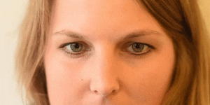
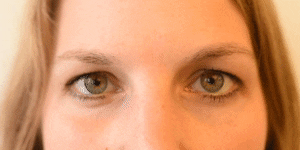
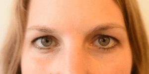
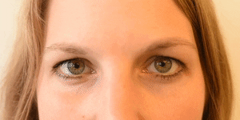
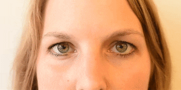
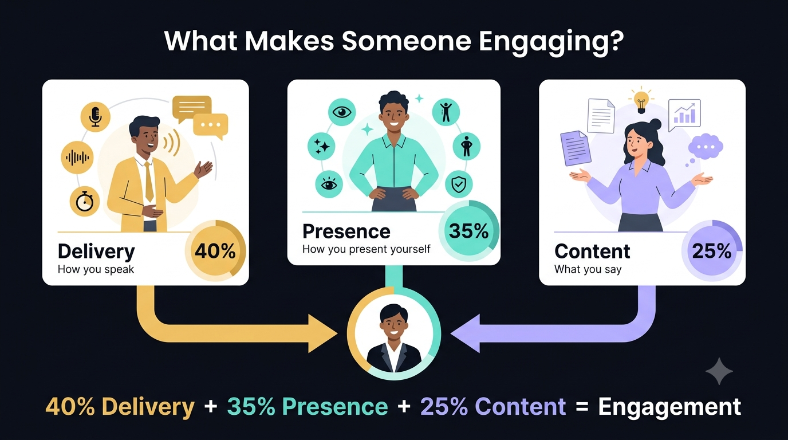

An AI that sits with you while you practice. It listens to your voice, watches your face, and reads your answers, then tells you, gently and honestly, how ready you really are.
Molave is one of the strongest hardwoods in the Philippines, known for lasting a long time without cracking or bending. We picked the name because we want the product to have that same reputation: strong, reliable, and built to last.
These guide how we designed the product.
People can practice as many times as they need, with no limit and no judgment, until they feel ready.
Voice, face, and answers are combined into a single, consistent score, calculated the same way every time.
Coaching is written in plain language, with no exaggeration and no false praise.
Speaking too fast, too slow, or with too many filler words is hard to notice on your own.
Eye contact and body language are difficult to judge from the inside.
Small signs of stress, like a tense jaw or a lowered brow, often go unnoticed.
molave.ai measures all three and turns them into one clear score.
molave.ai runs a live, spoken interview and measures three areas at the same time.
Speaking pace, pauses, and filler words like "um" and "uh."
Face and posture, read live in the browser during the conversation.
What was actually said, checked for clarity and relevance to the question.
Pick the role you're practicing for, how hard the questions should be, and how tough the interviewer sounds.
An AI interviewer talks with you out loud, like a real person would. Your camera quietly watches while you answer.
The moment you finish, you get your score and warm, practical coaching to help you improve.
It gently notices where you look, how you sit, your expressions, and the small movements of your hands. Nothing is recorded. Only the numbers ever leave your device.
It hears your words, and also how you say them: your pace, your tone, and the warmth or nerves that come through.
We use FACS (Facial Action Coding System), a method used in research for over 40 years to measure facial movement. It works from a normal camera, with no extra hardware, and turns expressions into consistent, repeatable measurements instead of opinions.





A single movement means little on its own. Combinations are what make the reading reliable.

Setup, live AI conversation, camera and voice reading, and a full score report.
Delivery, Presence, and Content are fused into a single Engagement Score.
Camera analysis runs in the browser. Voice recordings are deleted after scoring.
A visual, on-screen avatar to lead the interview, instead of voice only.
Run practice interviews directly inside Teams, where employees already work.
More users and real interview data to keep improving scoring accuracy.
What we need: approval to pilot with a small group, and access to a Teams environment for integration testing.